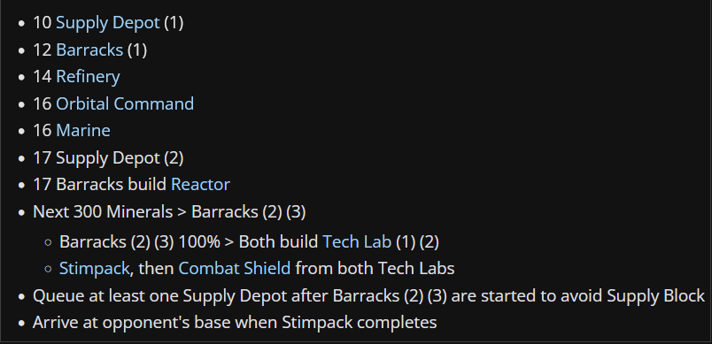

3-Rax With 1-1-1 Stim Timing
This is a great all arounder and very safe build in lower leagues because of how many units you will have early on
Back to Terran Builds
Guide
Build order

NOTE TO ETHAN THIS BUILD ORDER IS WAY OUT OF DATE
The opener is quite simple. Be sure your first depot should be made at the 17-18 second mark
The SCV depot will make the first barracks. Tip: use an Engineering bay to line up the 3x3 unit barracks for your wall
The Build will also require a quick refinery right after the Barracks, once the refinery is done, saturate it with 3 SCV's
once your barracks is done, make a reactor and make your Main CC an orbital, at this point nothing will be producing so make a CC in the natural and wall off with a depot against zerg
Here you have some freedom, use the Barracks SCV for a scout, at lower levels, keep it home and make a CC in the natural, it doesn't hurt to make a bunker in the natural against zerg cheese
while you are floating money, build your other 2 barracks and put tech labs on them as soon as they are done
once the tech labs complete start stim, combat shield, and build an engineering bay
the engineering bay will start weapons level 1, by this time you should have a healthy marine force with stim and combat almost done... attack with 12-16 marines
these marines' survival is up to your micro skills, but it will get you some scouting info as well as do some damage if you are lucky
build 2 more refineries
back home, build a factory, start a reactor on it, and build a starport
swap the factory and starport and start a reactor again on the factory
the starport should begin medivacs as soon as possible
against zerg, make some hellions, otherwise, once the factory reactor is done, swap it for a barracks tech lab
congratulations, this build will take you well into platinum league. In bigger macro games, this is the time to make a 3rd CC and build more barracks, but for now, a solid 2 base all-in will do the trick
some considerations: your CC's should be MULEing and making workers almost the entire time
same goes for the barracks. You should never lack marine production. If buildings arent making stuff, they're being wasted
lastly, practice against Easy AI to nail down your early game. It won't train you against cheese or early aggression but your build order will be on lock
Links to Liquipedia Guides
3 Rax Stim (vs. Terran)
3 Rax Aggro (vs. Protoss)
3 Barracks (vs. Zerg)
uThermal's 3-Rax Guide
Learn StarCraft 2 - Easy Build For Ranking Up (Bronze to Diamond)
Note: This is a general TvX matchup build order, zerg and terran will be fine but you will want to get some marauders (4-6) with concussive shells against protoss